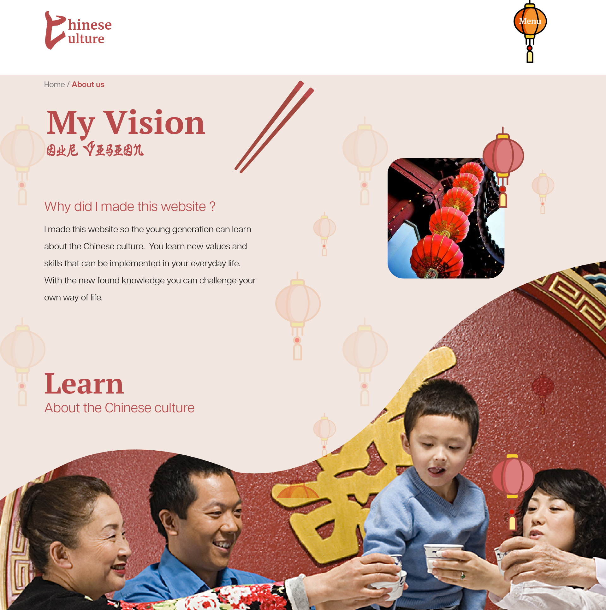
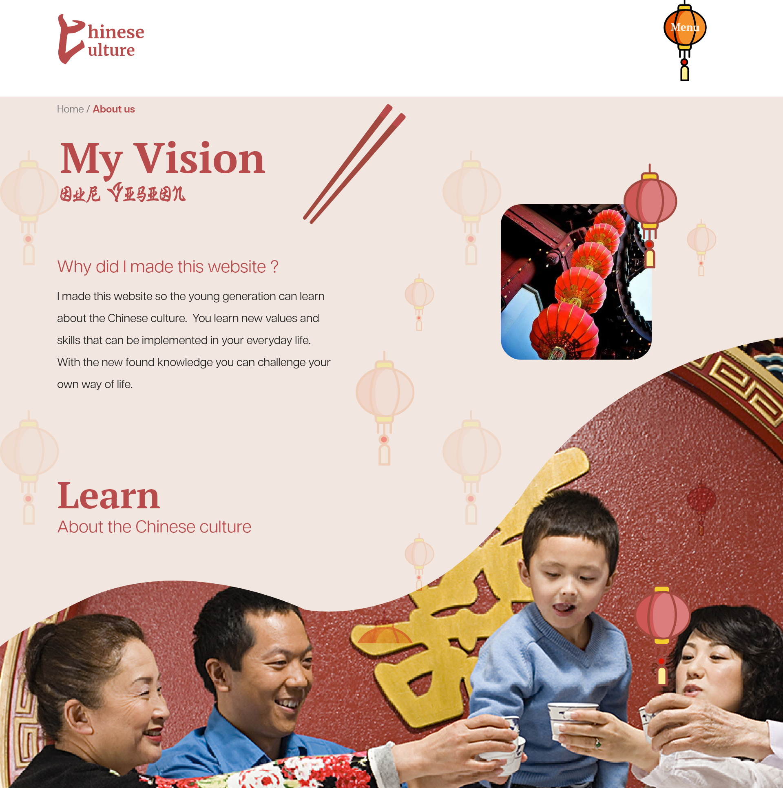
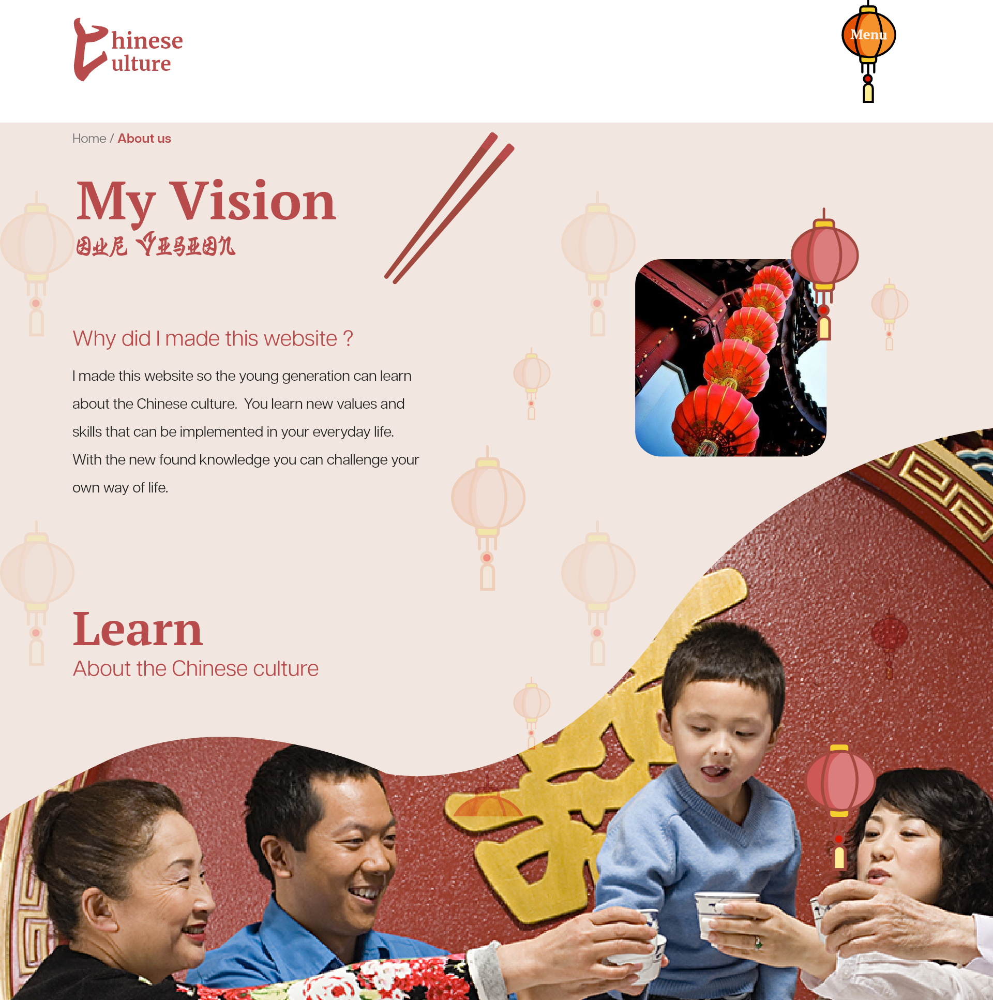

De Hernieuwde waarde van het Chinese Cultuur
Lees meer

De Hernieuwde waarde van het Chinese Cultuur
Lees meer
Dit is een A5 boekje met alle informatie van het Lettertype Binner EF.

Hier heb ik een poster gemaakt met een vier letter woord. Het woord die ik heb gekozen is Body.
Voor web typografie heb ik een filmfragment vormgegeven voor mensen die doof zijn geboren. De filmfragment gaat over het film blade runner. Blade runner is een science fiction fllm. Zonder geluid kun je aangegeven dat het gaat over een science fiction film door het sombere sfeer, maar het is saai en je kan niks begrijpen. Met geluid kun je verschillende geluiden horen die het fragment wat spannender maakt. Aan mijn de taakt om het filmfragment spannender en somber maken voor de mensen die doof zijn met behulp van CSS.
Lees meer
Dit is een poster die mensen bewustmaken over cultuur appropriatie op de afro-americaanse cultuur. Op de poster kunt u zien hoe de meerderheid (witte vrouw) een positief reactie krijgt terwijl de minderheid (zwarte man) discriminatie krijgt voor dezelfde haarstijl.
Lees meer
Mijn prototype is een aantrekkelijk tijdlijn van het klassieke karakter Mario. De Manier hoe ik de tijdlijn had gevisualiseerd is door de verschillende versies van Mario te laten zien. Om het prototype te gebruiken moet je een een mario versie kiezen en je krijgt korte informatie over die mario. Het Prototype is gemaakt met HTML, CSS en Javascript.
Dit is de tijdlijn van alle Mario's
Voor interface en beweging heb ik een interface gemaakt op XD van een karakter en drie functie laten uitvoeren met behulp van animatie. Mijn Karakter heet Coral en zij is een zeemermin. Zij kan zingen, dansen en zwemmen. Om de animatie te maken heb ik gebruikt gemaakt van Adobe After effects.
Dit is mijn HTML/CSS/Js prototype die ik had gemaakt voor de eindopdracht van deze Minor. Het is gebasseerd uit het artikel van de Correspondent. De titel van het artikel is; Kunstmatige intelligentie is geen gevaar voor de Kunstenaars; integendeel. Met de content van de artikel wilde ik met mijn visuele interface een positiever beeld geven bij het gebruiken van AI om kunst te maken.